为了解决小块内存的分配问题，Linux内核提供了快分配器，最早实现的快分配器是SLAB分配器。
SLAB分配器的作用不仅仅是分配小块内存，更重要的是针对经常分配和释放的对象充当缓存。SLAB分配器的核心思想是：尾每种队形类型创建一个内存缓存，每个内存缓存由多个大块slab组成，一个大块是一个或多个连续的物理页，每个大块包含多个对象，SLAB采用了面向对象的思想，基于对象类型管理内存，每种对象被划分成一类，比如进程描述符task_struct是一个类，每个进程描述符实例是一个对象，内存缓存的组成图如下图所示：
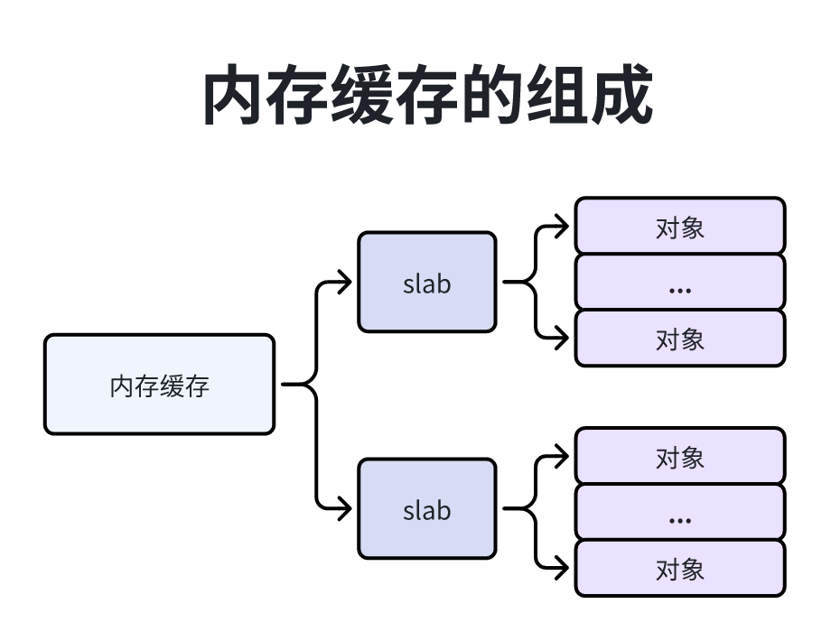
SLAB分配器在牟星情况下表现不太好，所以Linux内核提供了2个改进的快分配器：
1）在配被了大量物理内存的大型计算机墙上，SLAB分配器的管理数据结构的内存开销比较大，实际了SLUB分配器；
2）在小内存的嵌入式设备上，SLAB分配器的代码太多，太复杂设计了SLOB分配器。SLOB是“Simple List Of Blocks”，简单的快链表；
3种块分配器提供了统一的编程接口。
为了方便使用，块分配器在初始化的时候创建了一些通用的内存缓存，对象的长度大多数是2字节，从普通区域分配页的内存缓存的名称是”kmalloc-
通用的内存缓存的编程接口如下：
1void *kmalloc(size_t size, gfp_t flags);size：需要的内存长度；
flags：传给页分配器的分配标志位，当内存缓存没有空闲对象，向页分配器请求分配页的时候使用这个分配标志位。
块分配器找到一个何时的通用内存缓存：对象的长度刚好大于等于请求的内存长度，然后从这个内存缓存分配对象，如果分配成功，返回对象的地址，否则返回空指针。
11void *krealloc(const void *p, size_t new_size, gfp_t flags);p：需要重新分配内存的对象；
new_size：新的长度；
flags：传给页分配的标志位；
根据新的长度对象重新分配内存，如果分配成功看，返回新的地址，否则返回空指针。
11void kfree(const void *objp);objp：kmalloc()返回的对象的地址；
kfree函数怎么知道对象属于哪个通用的内存缓存？
使用通用的内存缓存的缺点是：块分配器需要找到一个对象的长度刚好大于或等于请求的内存长度通用的内存缓存，吐过请求的内存长度和内存缓存的对象长度相差很远，良妃比较大，比如申请36字节，实际分配的内存长度是64字节，浪费了28字节。所以有时候使用者需要创建专用的内存缓存。
21struct kmem_cache *kmem_cache_create(const *name, size_t size, size_t align, 2 unsigned long flags, void (*ctor)(void *));name：名称；
size：对象的长度；
align：对象需要对齐的数值；
flags：SLAB标志位；
ctor：对象的构造函数；
11void kmem_cache_alloc(struct kmem_cache *cachep, gfp_t flags);cachep：从指定的内存缓存分配；
flags：传给页分配器的分配标志位，当内存缓存没有空闲对象，向页分配器请求分配页的时候使用这个分配标志；
如果分配成功，返回对象的地址，否则返回空指针。
11void kmem_cache_free(struct kmem_cache *cachep, void *objp);cachep：对象所属的内存缓存；
objp：对象的地址；
11void kmem_cache_destroy(struct kmem_cache *s);s：内存缓存；
内存缓存的数据结构如下图所示：
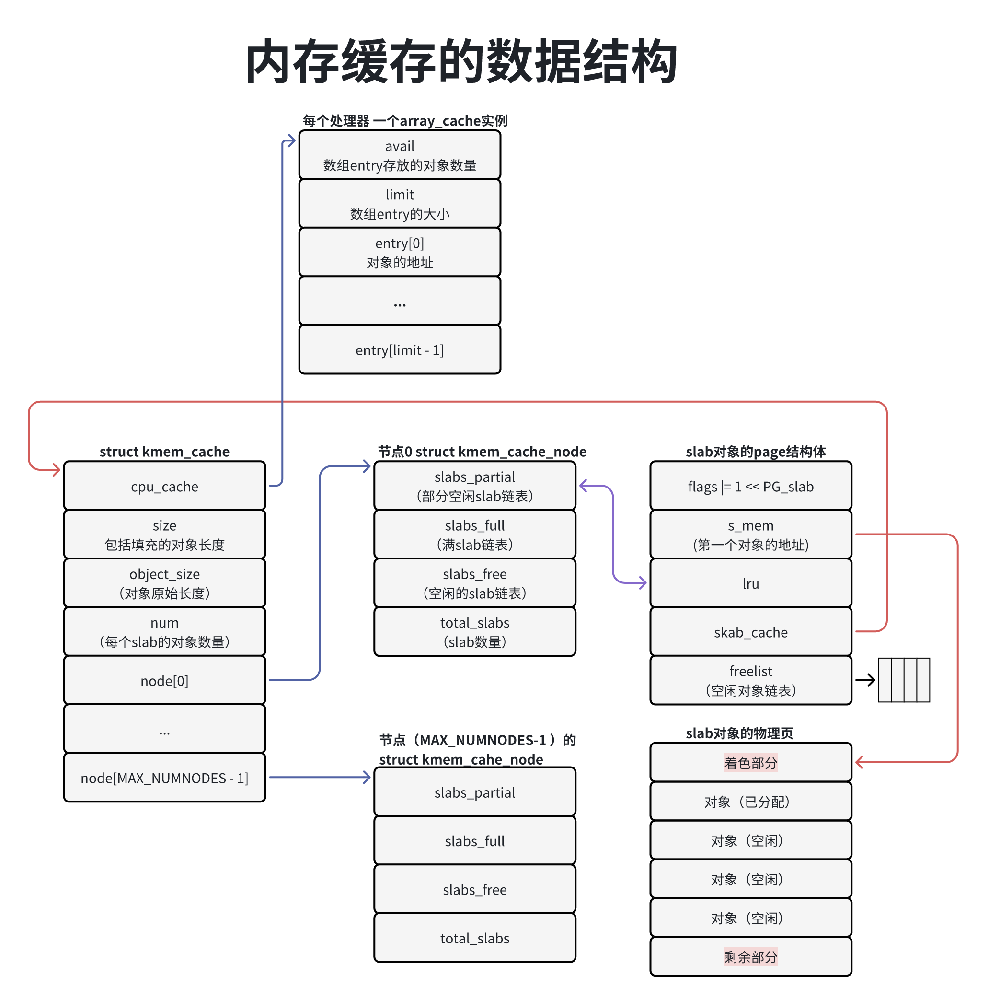
每个内存缓存对应一个kmem_cache实例；
成员gfporder是slab的阶数，成员num是每个slab包含的对象数量，成员object_size是对象的原始长度，成员size是包括填充的对象长度；
每个内存节点对应一个kmem_cache_node实例；
kmem_cache_node实例包含了3条slab链表：链表slabs_partial把部分对象空闲的slab链接起来，链表slabs_full把没有空闲对象的slab链接起来，链表slabs_free把所有对象空闲的slab链接起来。成员total_slabs是slab数量。
每个slab由一个或多个连续的物理页组成，页的阶数时kmem_cache.gfporder，如果阶数大于0，组成一个复合页。slab被划分成多个对象，大多数情况下，slab长度不是对象长度的整数倍，slab剩余部分，可以用来给slab着色：“把slab的第一个对象从slab的其实位置偏移一个数值，偏移值是处理器的一级缓存行长度的整数倍忙不tongslab的偏移值不同，使不同slab的对象映射的处理器不同的缓存行”，所以我们看到的slab的前面有一个着色部分。
page结构体的相关成员如下：
1）成员flags设置标志位PG_slab，表示页属于SLAB分配器。
2）成员s_mem存放slab第一个对象的地址。
3）成员active表示已分配对象的数量。
4）成员lru作为链表节点加入其中一条slab链表。
5）成员slab_cache指向kmem_cache实例。
6）成员freelist指向空闲对象链表。
思考：kfree函数怎么知道对象属于哪个通用的内存缓存分配？
回答：
第一步，根据对象的虚拟地址得到物理地址，因为块分配器使用的虚拟地址属于直线映射的内核虚拟地址空间，虚拟地址 = 物理地址 + 常量，把虚拟地址转换成物理地址很方便；
第二步，根据物理地址得到物理号；
第三步，根据物理号得到page实例；
第四步，如果是复合页，需要得到首页的page实例；
第五步，根据page实例的成员cpu_slab得到kmem_cache实例。
kmem_cache实例的成员cpu_slab指向array_cache，每个处理器对应一个array_cache实例，称为数组缓存，用来缓存刚刚释放的对象，分配时首先从当前处理器的数组缓存分配，避免每次都要从slab分配，减少链表操作和锁操作，提高分配速度。
成员limit是数组的大小，成员avail是数组entry存放的对象数量，数组entry存放对象地址。
每个对象的内存布局如下图所示：
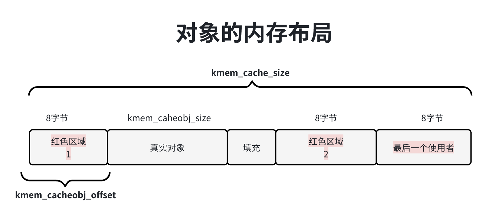
区域说明：
1）红色区域1：长度是8字节，写入一个魔幻数，如果值被修改，说明对象被改写；
2）真实对象：长度是kmem_cache.obj_size，偏移是kmem_cache.obj_offset；
3）填充：用来对齐的填充字节；
4）红色区域2：长度是8字节，写入一个魔幻数，如果值被修改，说明对象被改写；
5）最后一个使用者：在64位系统中长度是8字节，存放最后一个调用者的地址，用来确定对象被谁改写；
对象的长度是kmem_cache.size。红色区域1、红色区域2和最后一个使用者是可选的，当想要发现内存分配和使用的错误，打开调试配置CONFIG_DEBUG_SLAB的时候，对象才包含这3个成员。
kmen_size.obj_size是调用者指定的对象长度，kmem_cache.size是对象实际占用的内存长度，通常比前者大，原因是为了提高访问对象的速度，需要把对象的地址和长度都对齐到某个值，对齐值计算步骤如下：
1）如果创建内存缓存时指定了标志位SLAB_HWCACHE_ALIGN，要求和处理器的一级缓存行的长度对齐，计算对齐值的方法如下：
a、如果对象的长度大于或等于一级缓存的长度的一半，对齐值取以及缓存行的长度；
b、如果对象的长度小于或等于一级缓存行的长度的一半，对齐值取
c、如果对齐值小于指定的对齐值，取指定的对齐值；
举例来说明：假设指定的对齐值是4字节，一级缓存行的长度是32字节，对象的长度是12字节，那么对齐值是16字节，对象占用的内存长度是16字节，把2个对象放在一个一级缓存行里面。
2）如果对齐值小于ARCH_SLAB_MINALIGN，那么取ARCH_SLAB_MINALIGN。ARCH_SLAB_MIBALIGN是各种处理器架构定义的最小对齐值，默认值是8。
3）把对齐值向上调整为指针长度的整数倍。
每个slab需要一个空闲对象链表，从而把所有空闲对象链接起来，空闲对象链表是用数组实现的，数组的元素个数是slab的对象数量，数组存放空闲对象的索引。假设一个slab包括4个对象，空闲对象链表的初始化状态如下图所示：
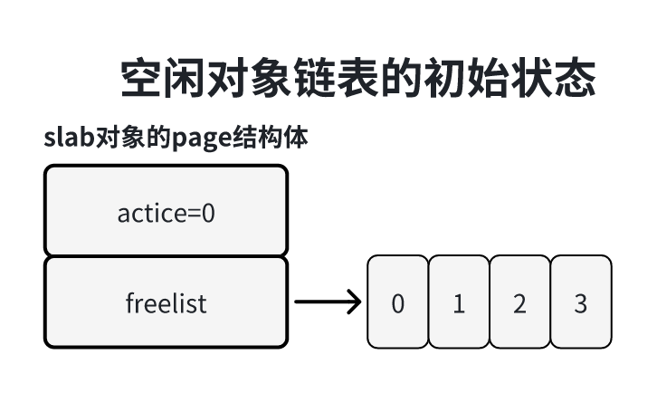
page->freelist指向空闲对象链表，数组中第n个元素存放的对象索引是n，如果打开了SLAB空闲链表随机化的配置宏CONFIG_SLAB_FreelIst_RANDOM，数组中第n个元素存放的对象索引是随机的。
第一次分配对象，从0号数组元素取出空闲对象索引0，page->active增加到1，空闲对象链表如下图所示：
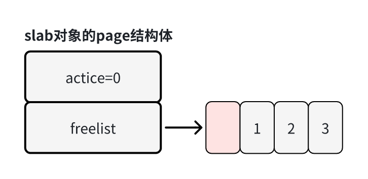
当所有对象分配完毕后，page->actice增加到4，等于slab的对象数量，空闲对象链表如下图所示：
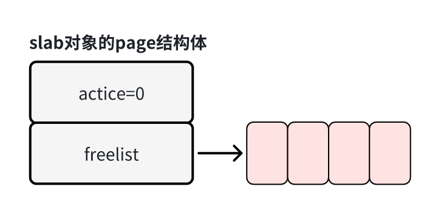
当释放索引0的对象后，page->actice减1变成3，3号数组元素存放空闲对象索引0，空闲对象链表如下图所示：
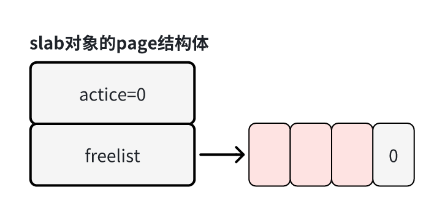
空闲对象链表的位置有3种选择：
1）使用一个对象存放空闲对象链表，此时kmem_cache.flags设置了标志位CFLGS_OBJFREELIST_SLAB；
2）把空闲的对象链表存放在slab外面，此时kmem_cache.flags设置了标志位CFLGS_OFF_SLAB；
3）把空闲对象链表放在slab尾部，如果kmem_cache.flags没有设置上面2个标志位，就表示把空闲对象链表放在slab尾部；
如果使用一个对象存放空闲对象链表，默认使用最后一个对象。如果打开了SLAB空闲链表随机化的配置宏CONFIGL_SLAB_FREELIST_RANDOM，这个对象是随机选择的。
假设一个slab包含4个对象，使用1号对象存放空闲对象链表，初始化状态如下图所示：
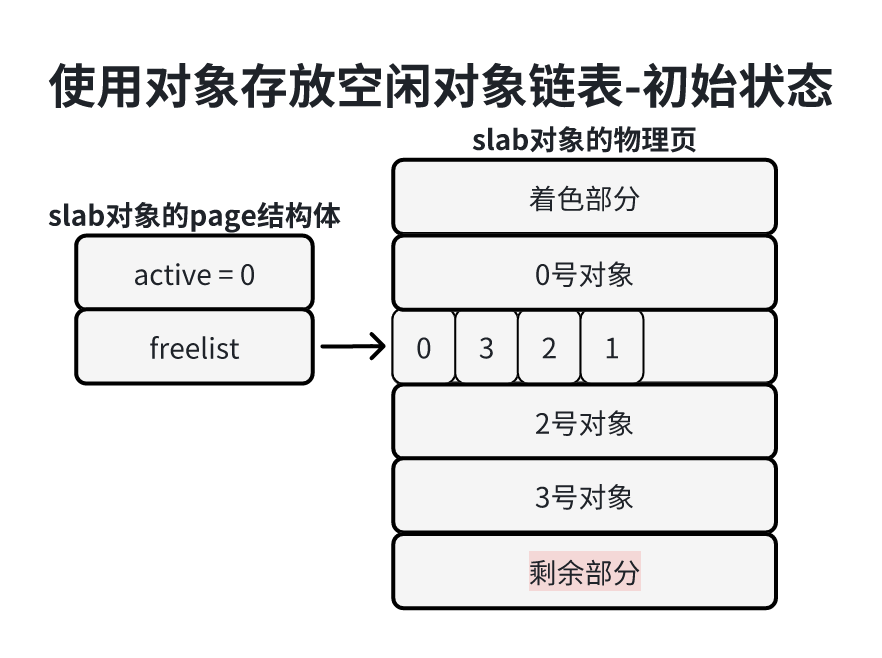
这种方案会不会导致可以分配的对象减少一个呢？答案是不会的，存放空闲对象链表的对象可以被分配，这种方案采用了巧妙的方法。
1）必须把存放空闲对象链表的对象索引存放在空闲对象数组的最后面，保证了这个对象是最后一个被分配出去的。
2）分配最后一个空闲对象，page->active增加到4，page->freelist变成了空指针，所有对象被分配出去，已经不需要空闲对象链表，如下图所示：
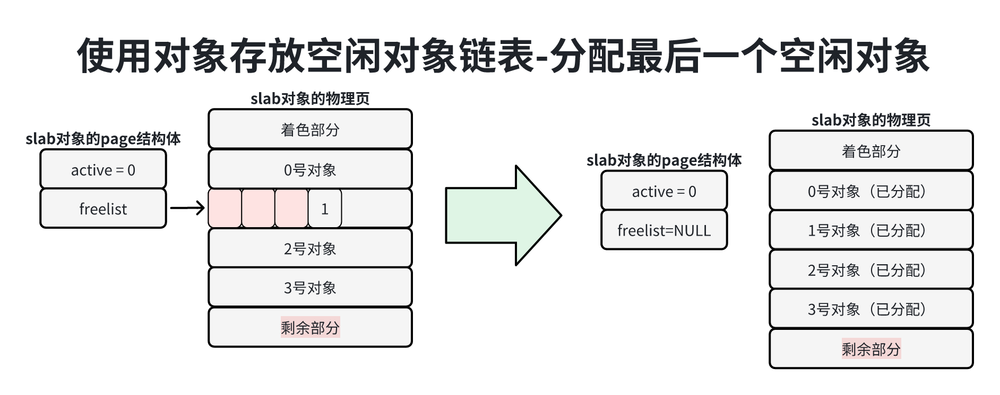
3）在所有帝乡分配完毕后，假设现在释放2号对象，slab使用2号对象存放空闲对象链表，page-freelist指向2号对象，把对象索引2存放在空闲对象数组的最后面，如下图所示：
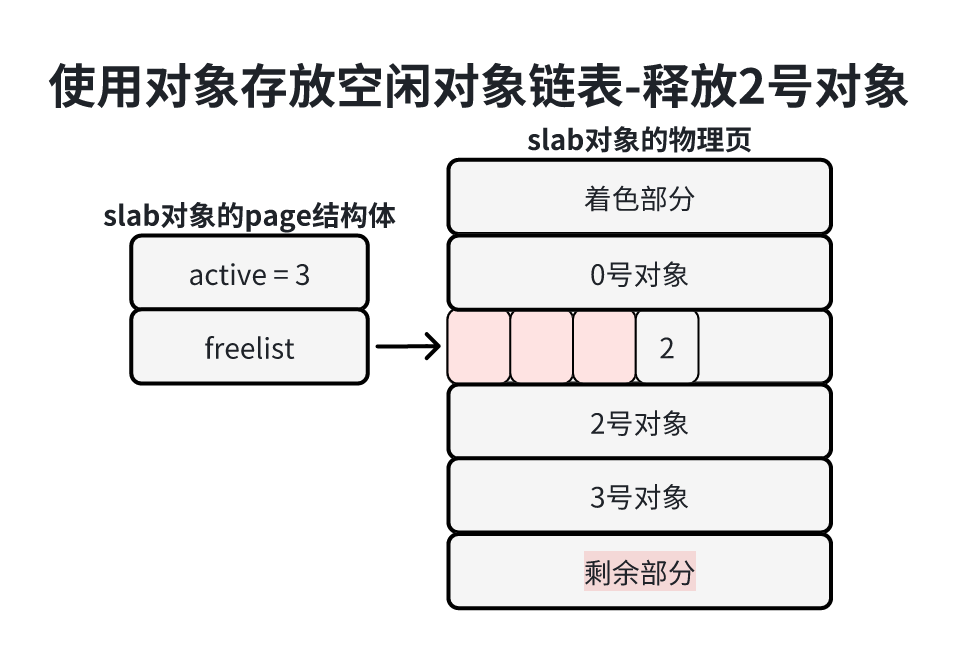
如果把空闲对象链表存放在slab外面，需要为空闲对象链表创建一个内存缓存，kmem_cache.freelist_cache指向空闲对象链表的内存缓存，如下图所示：
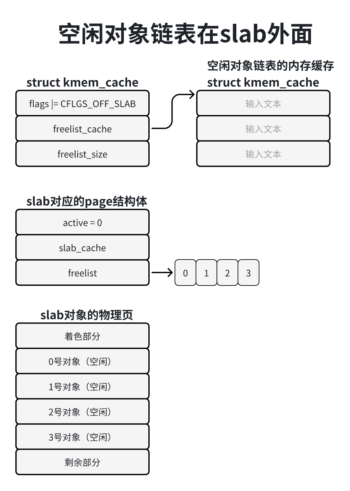
如果slab尾部的剩余部分足够大，可以把空闲对象链表存放在slab尾部，。如下图所示：
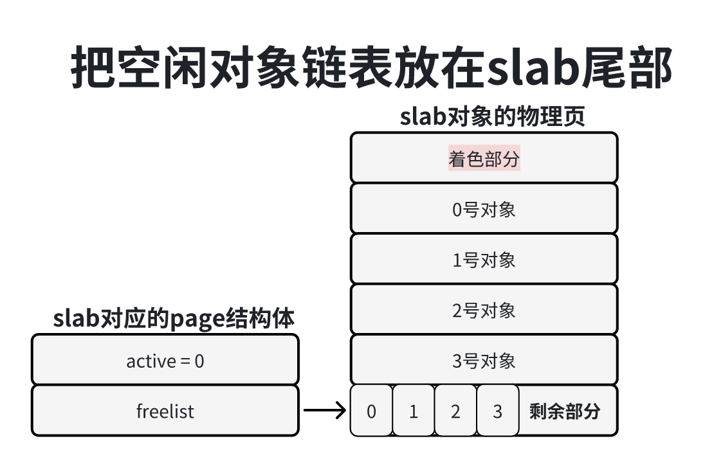
创建内存缓存的时候，确定空闲对象链表的位置方法如下：
1）首先尝试使用一个对象存放空闲对象链表；
a、如果指定了对象的构造函数，那么这种方案不合适；
b、如果指定了标志位SLAB_TYPESAFR_BY_RCU，表示使用RCU技术延迟释放slab，那么这种方案不合适；
c、计算出slab长度和slab的对象数量，空闲对象链表的长度等于（slab对象数量 * 对象索引长度）。如果空闲对象链表的长度大于对象长度，那么这种方案不合适；
2）接着尝试把空闲对象链表放在slab外面，计算出slab长度和slab的对象数量。如果slab的剩余长度大于或等于空闲对象链表的长度，应该把空闲对象链表放在slab尾部。，不应该使用这种方案。
3）最后尝试把空闲对象链表放在slab尾部。
函数caculate_slab_order负责计算机slab长度，从0阶到kmalloc()函数支持的最大阶数（KMALLOC_MAX_ORDER），尝试如下：
1）计算对象数量的剩余长度；
2）如果对象数量是0，那么不合适；
3）如果对象数量大于允许的最大slab对象数量，那么不合适，允许的最大slab对象数量是SLAB_OBJ_MAX_NUM，等于（2sizeof(freelist_idx_t) * 8 - 1），frelist_idx_t是对象索引的数据类型。
4）对于空闲对象链表在slab外面的情况，如果空闲对象链表的长度大于对象长度的一半，那么不合适；
5）如果slab时可回收的（设置了标志位SLAB_RECLAIM_ACCOUNT），那么选择这个阶数；
6）如果阶数大于或等于允许的最大slab阶数（slab_max_order），那么选择这个阶数；
7）如果剩余长度小于或等于slab长度的
slab_max_order：允许的最大slab阶数，如果内存容量大于32MB，那么默认值是1，否则默认值是0。可以通过内核参数“slab_max_order”指定。
slab时一个或多个连续的物流页，起始地址总是页长度的整数倍，不同slab中相同偏移位置在处理器的一级缓存中索引相同，如果slab的剩余部分的长度超过一级缓存行的长度，剩余部分对应的一级缓存没有被利用；如果对象的填充字节的长度超过一级缓存行的长度，填充字节对应的一级缓存行没有被利用。这2种情况导致处理器的某些缓存行被过度使用，另一些缓存行很少使用。
在slab的剩余部分的长度超过一级缓存行长度的情况下，为了均匀利用处理器的所有一级缓存行，slab着色（slab coloring）利用slab的剩余部分，使不同slab的第一个对象的偏移不同。
着色是一个比喻，和颜色无关，只是表示slab中的第一个对象需要移动的偏移值，使对象放到不同的一级缓存行里。
内存缓存中着色相关的成员如下：
1）kmem_cache.colour_off是颜色偏移等于处理器的一级缓存行的长度，如果小于对齐值那么取对齐值。
2）kmem_cache.colour是着色范围，等于（slab的剩余长度/颜色偏移）。
3）kmem_cache.node[n]->colour_next是下一种颜色，初始值是0。
在内存节点n上创建新的slab，计算slab的颜色偏移的方法如下。
1）把kmem_cache.node[n]->colour_next加1，如果大于或等于着色范围，把值设为0。
2）slab的颜色偏移=kmem_cache.node[n]->colour_next * kmem_cache.colur_off。
slab对应的page结构体的成员s_mem存放第一个对象的地址，等于（slab起始地址 + slab的颜色偏移）。
如下图所示，内存缓存为每处理器创建了 一个数组缓存（结构体array_cache）。释放对象时，把对象存放到当前处理器对应的数组缓存中；分配对象的时候，先从当前处理器的数组中分配对象，采用后进先出的原则，这种做法可以提高性能：
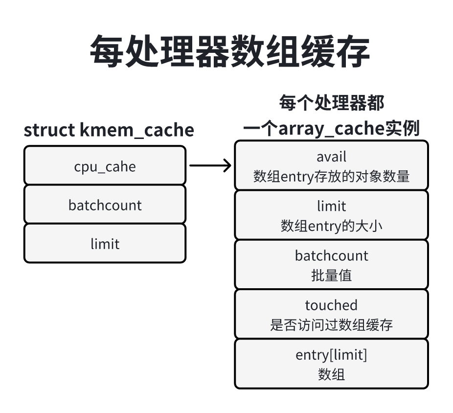
缓存过程：
刚释放的对象很可能还在处理器的缓存中，可以更好的利用处理器缓存；
减少链表的操作；
避免处理器之间的互斥，减少自旋锁的操作；
结构体array_cache如下：
entry：存放对象地址和数组；
avail：存放对象的数量；
limit：数组的大小，和结构体kmem_cache的limit值相同，根据对象长度猜测的一个值不是真实的；
batchcount：批量值，和kmem_cache的batchcount值相同，批量值是数组大小的一半。
分配对象的时候，先从当前处理器缓存分配对象，如果数组缓存时空的，那么批量分配对象以重新填充数组缓存，批量值就是数组缓存的成员batchcount。
释放对象的时候，如果数组缓存时满的，那么先把数组缓存中的对象批量归还给slab，批量值就是数组缓存的成员batchcount，然后把正在释放的对象存放到数组缓存中。
看下SLAB分配器是怎么支持NUMA系统。下图所示，内存缓存针对每个内存节点创建一个kmem_cache_node实例。
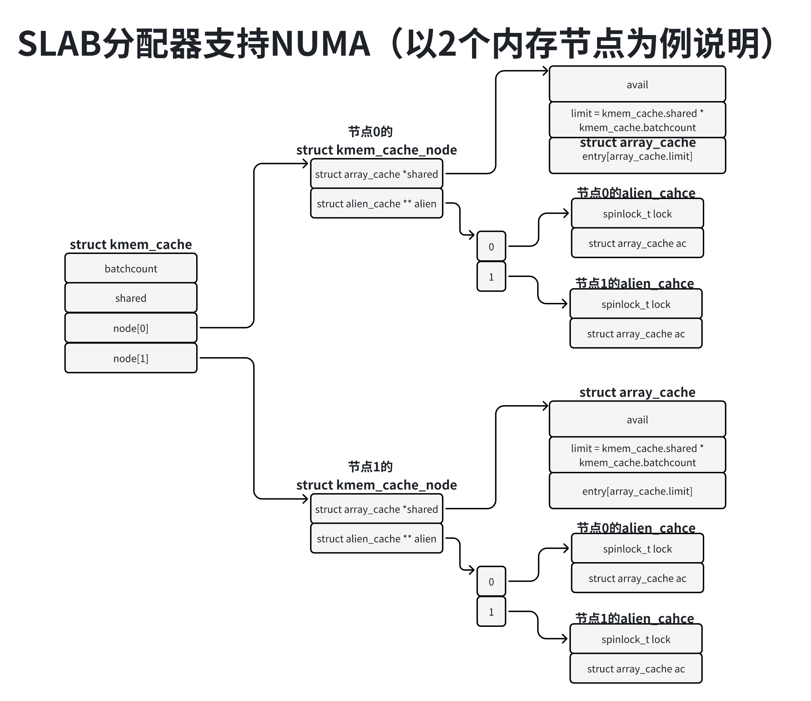
kmem_cache_node实例的成员shared指向共享数组缓存，成员alien指向远程节点数组缓存，每个节点一个远程节点数组缓存，这2个成员有什么作用？用来分阶段释放从其他节点借用的对象，先释放到远程节点数组缓存，然后转移到共享数组缓存，最后释放到远程节点的slab。
假设处理器0属于内存节点0，处理器1属于内存节点1。处理器0申请分配对象的时候，首先从节点0分配对象，如果分配失败，从节点1借用对象。
处理器0释放从节点1借用的对象时，需要把对象放到节点0的kemem_cache_node实例中域节点1对应的远程节点缓存数组中，先看是不是满了，如果满了，必须先清空，把对象转移到节点1的共享数组缓存中，如果节点1的共享数组缓存是满的，那马把剩下的对象知己释放到到slab。
分配和释放本地内存节点的对象时，也会使用共享数组缓存。
1）申请分配对象时，如果当前处理器的数组缓存时空的，共享数组缓存里面的对象可以用来重填。
2）释放对象时，如果当前处理器的数组缓存时满的，并且共享数组缓存由空闲空间，那么可以转移一部分对象到共享数组缓存，不需要把对象批量归还给slab，然后把正在释放的对象添加到当前处理器的数组缓存中。
全局变量use_alien_caches用来控制是否使用远程节点数组缓存分节点释放从其他分配的对象，默认值是1，可以在引导内核时使用内核参数noaliencache指定。
当包括填充的对象长度不超过页长度的时候，使用共享数组缓存，数组大小时（kmem_cache.shared *kmem_cache.batchcount），kmem_cache.batchcount是批量值，kmem_cache.shared用来控制贡献数组缓存的大小，当前代码实现指定的值是8。
为了减少内存开销和增加对象缓存热度，块分配器合并相似的内存缓存。在创建内存缓存的时候，从已经存在的内存缓存中找到一个相似的内存缓存，和原始的创建者共享这个内存缓存。3种分配器都支持内存缓存合并。
假设正在创建内存缓存t。
如果合并控制变量slab_nomerge的值是1，那么不能合并，默认值是0，如果想要进制合并，可以在引导内核的时候使用内核参数“slab_nomerge”指定。
如果t指定了对象构造函数，不能合并。
如果t设置了组织合并的标志位，那么不能合并， 阻止合并的标志位是调试和使用RCU技术延迟释放slab代码如下：
21 | SLAB_TYPESAFE_BY_RCU | SLAB_NOLEAKTRACE | SLAB_FAILSLAB | SLAB_KASAN)遍历每个内存缓存s，判断t是否可以和s合并：
1）如果s设置了阻止合并的标志位，那么不能合并；
2）如果s指定了对象构造函数，那么不能合并；
3）如果t的对象长度大于s的对象长度，那么不能合并；
4）如果t的下面4个标志位和s的不相同，那么不能合并；
21| SLAB_NOTRACE | SLAB_ACCOUNT)5）如果对齐值不兼容，s的对象长度不是t的对齐值的整数倍，那么不能合并；
6）如果s的对象长度和t的对象长度差值大于或等于指针长度，那么不能合并；
7）SLAB分配器特有的检查项：如果t的对齐值不是0，并且t的对齐值大于s的对齐值，或者s的对齐值不是t的对齐值的整数倍，那么不能合并；
8）其余条件是可以合并的；
找到可以合并的内存缓存以后，把引用计数加1，对象的原始长度取两者的最大值，然后把内存缓存的地址值返回给调用者。
对于所有对象空闲的slab，没有立即释放，而是放在空闲的slab链表中，只有内存节点上空闲的对象的数量超过限制，才开始回收空闲的slab，直到空闲的数量小于或等于限制。
如下图所示，结构体kmem_cache_node成员slabs_free是空闲slab链表头节点，成员free_objects是空闲对象的数量，成员free_limit是空闲对象的数量限制。
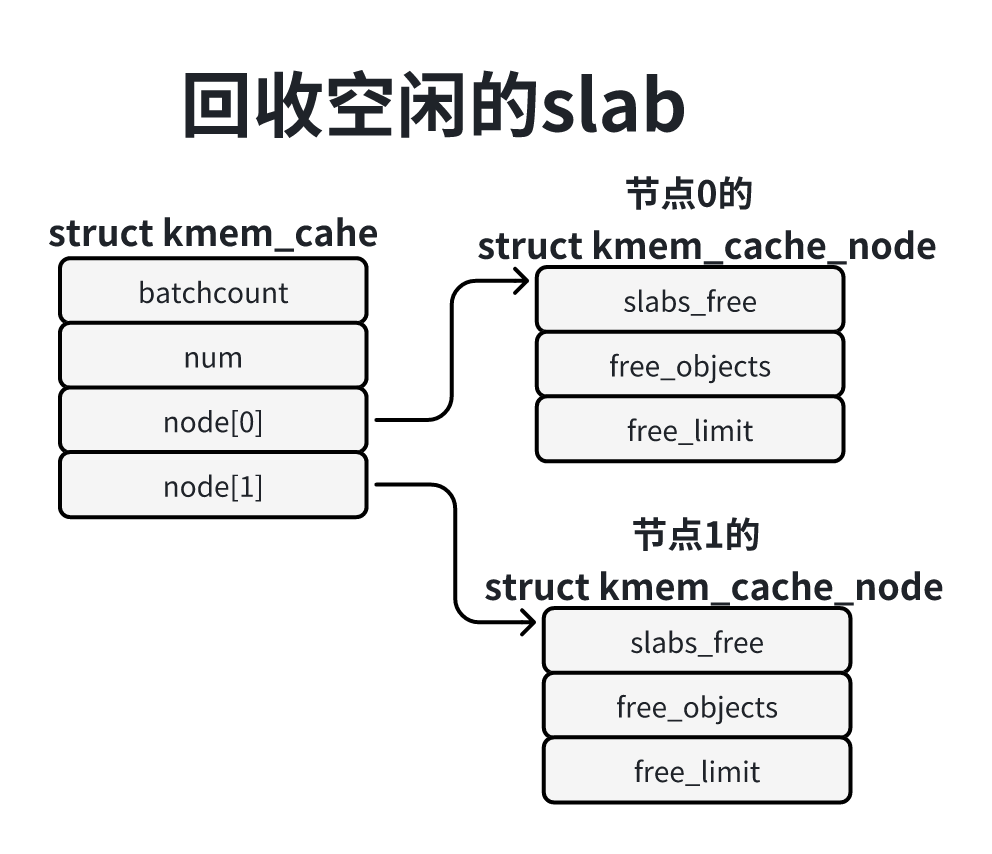
节点n的空闲对象的数量限制 = （1+节点的处理器数量）* kmem_cache.batchcount + kmem_cache.num。
SLAB分配器定时回收对象和空闲的slab，实现方法是在每个处理器上项全局工作队列上添加1个延迟工作项，工作项的处理函数式cache_reap。
每个处理器每隔2秒针对每个内存缓存执行。
1）回收节点n（假设当前处理器属于节点n）对应的远程节点数组缓存中的对象；
2）如果过去2秒没有从当前处理器的数组缓存分配对象，那么回收住宿缓存中的对象；
每个处理器每隔4秒针对每个内存缓存执行：
1）如果过去4秒没有从共性数组缓存分配对象，need回收共享数组缓存中的对象；
2）如果过去4秒没有从空闲的slab分配对象 ，那么回收空闲的slab；
出现内存改写时，我们需要定位出是谁改写的，SLAB分配器提供了调试功能，我们可以打开调试配置宏CONFIG_DEBUG_SLAB，此时对象增加3个字段，红色区域1、红色区域2、最后已给使用者。如下图所示：
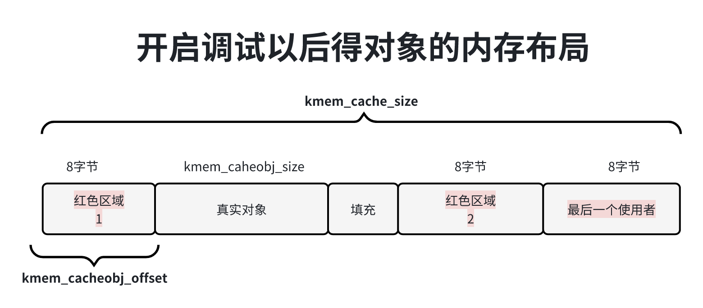
分配对象时，把对象毒化：把最后1字节以外的每个字节设置为0x5a，把最后一个字节设置为0xa5；把对象前后的红色区域设置为宏RED_ACTIVE表示魔幻数；字段“最后一个使用者”保存调用函数地址。
释放对象时，检查对象：如果对象前后的红色区域都是宏RED_ACTIVE表示魔幻数，说明正常；如果对象前后的红色区域都是宏RED_INACTIVE表示的魔幻数，说明重复释放；其他情况，说明写越界。
释放对象时，把对象毒化：把最后1字节以外的每个字节设置为0x6b，把最后1字节设置为0xa5；把对象前后的红色区域设置为RED_INACTIVE，字段“最后一个使用者”保存调用函数的地址。
再次分配对象时，检查对象：如果对象不符合“最后1字节以外的每个字节是0x6b”，最后1字节是0xa5，说明对象被改写，如果对象前后的红色区域不是宏RED_INACTIVE表示的魔幻数，说明重复释放或者越界。
SLUB分配器集成了SLAB分配器的核心思想，在某些地方做了改进。
1）SLUB分配器的管理数据结构开销大，早期每个slab有一个描述符和跟在后面空闲对象数组。SLUB分配器把slab的管理信息保存在page结构中，使用联合体重用page结构体的成员，没有使用page结构体的大小增加。现在SLAB分配器反过来向SLUB分配器学习，抛弃了slab描述符，把slab的管理信息保存在了page结构体中。
2）SLAB分配器的链表多，分为空闲slab链表，部分空闲slab链表和慢slab链表，管理复杂。SLUB分配器只保留部分空闲slab链表。
3）SLAB分配器对NUMA系统的支持复杂，每个内存节点有贡献数据缓存和远程节点数组缓存，对象在这下数组缓存之间转移，实现复杂。SLUB分配器做了简化。
4）SLUB分配器抛弃了效果不明显的slab着色。
SLUB分配器内存缓存的数据结构如下图所示：
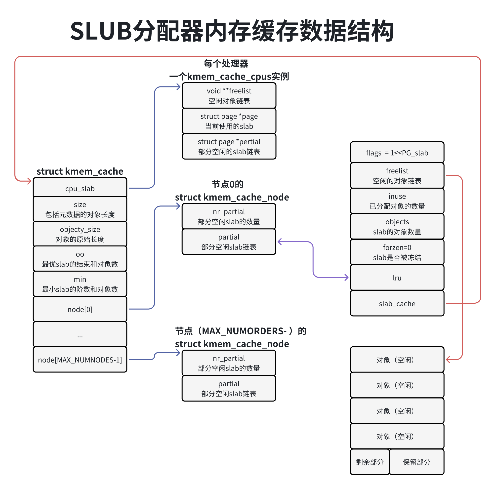
每个内存缓存区对应一个kmem_cache实例。
成员size是包括元数据的对象长度，成员object_size是对象的原始长度。
成员oo存放最优slab的阶数和对象数，低16位是对象数，高16位是slab的阶数，即oo等于（slab的阶数 << 16 | 对象数），格式和oo相同。最小slab只需要足够存放一个对象，当设备长时间运行以后，内存碎片化，分配连续物理页很难成功，如果分配最优slab失败，就分配最小slab。
每个内存节点对应一个kmem_cache_node实例。
链表partial把部分空闲的slab链接起来，成员nr_partial是部分空闲的slab的数量。
每个slab由一个或多个连续的物理页组成，页的阶数时最优slab或最小slab的阶数，如果阶数大于0，组成一个复合页。
slab被划分成多个对象， 如果slab的长度不是对象长队的整数倍，尾部由剩余部分。尾部也可能由保留部分，kmem_cache实例的成员reserved存放保留长度。
在创建内存缓存的时候，如果指定标志位SLAB_TYPEAFE_BY_RCU，要求使用RCU延迟释放slab，在调用函数call_rcu把释放slab的函数加入RCU回调函数队列的时候，需要提供一个rcu_head实例，slab提供的rcu_head实例的位置分两种情况。
1）如果page结构体的成员lru的长度大于或等于rcu_head结构体的长度，那么重用成员lru。
2）如果page结构体的成员lru的长度小于rcu_head结构体的长度，那么必须在slab尾部为rcu_head结构体成员保留空间，保留长度是rcu_head结构体的长度。
page结构体相关成员如下：
1）成员flags设置表位PG_slab，表示页属于SLUB分配器。
2）成员freelist指向第一个空闲对象。
3）成员inuse表示已分配对象的数量。
4）成员objects是对象数量。
5）成员frozen表示slab是否被冻结在每处理器slab缓存中。如果slab在每处理器slab缓存中，它处于同届状态；如果slab在内存节点的部分空闲slab链表中，它处于解冻状态。
6）成员lru作为链表节点加入部分空闲slab链表。
7）成员slab_cache指向kmem_cache实例。
kmem_cahce实例的成员cpu_slab指向kmem_cache_cpu实例，每个处理器对应一个kmem_cache_cpu实例，称为每处理器slab缓存。
SLAB分配器的每处理器数组缓存以对象为单位，而SLUB分配器的每处理器slab缓存以slab为单位。
成员freelist指向当前使用的slab的空闲对象链表，成员page指向当前使用的slab对象的page实例，程媛媛partial指向每处理器部分空闲slab链表。
对象有2种内存布局，区别是空闲指针的位置不同。
第一种内存布局如下图所示，空闲指针在红色区域2的后面：
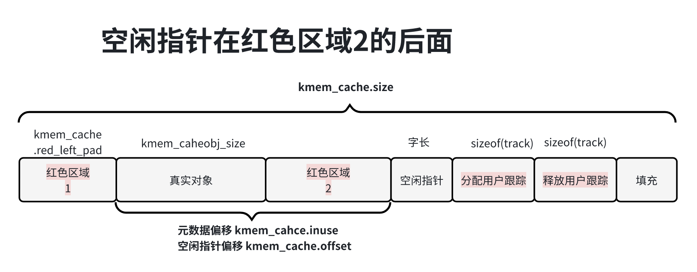
第二种内存布局如下图所示，空闲指针重用真实对象的第一个字。
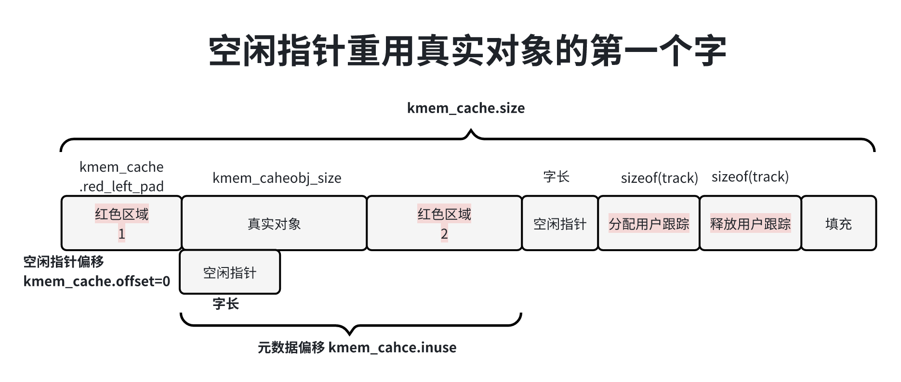
kmem_cache.offset是空闲指针的偏移，空闲指针的地址等于 真实对象的地址 + 空闲指针偏移。
当红色区域1的长度 = kmem_cache.red_lef_pad = 字长对齐的指定的对齐值。
红色区域2的长度 = 字长 - （对象长度 % 字长）
当开启SLUB分配器的调试配置宏CONFIG_SLUB_DEBUG的时候，对象才包含红色区域1、红色区域2、分配用户跟踪和释放用户跟踪这4个成员。
以下3种情况下选择第一种内存布局：
1）指定构造函数；
2）指定标志位SLAB_TYPESAFE_BY_RCU，要求适应RCU延迟释放slab；
3）指定标志位SLAB_POISON，要求毒化对象；
其他情况使用第二重内存布局。
以对象使用第一种内存为例说明，一个slab空闲对象链表的初始化状态如下图所示，page->freelist指向第一个空闲对象中的真实对象，前一个空闲对象中的空闲指针指向后一个空闲对象中的真实对象，前一个空闲对象中的空闲指针指向后一个空闲对象的真实对象，最后一个空闲对象中的空闲指针是空指针。如果打开了SLAB空闲链表随机配置宏CONFIG_SLAB_FREELIST_RANDOM，每个对象在空闲对象链表中的位置都是随机的。
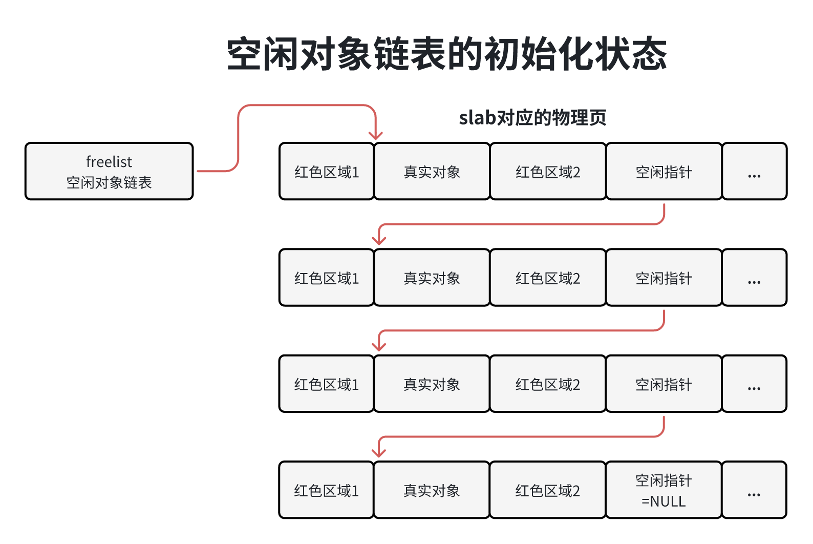
分配一个对象后，page->freelist指向下一个空闲对象中的真实对象，空闲对象链表如下所示：
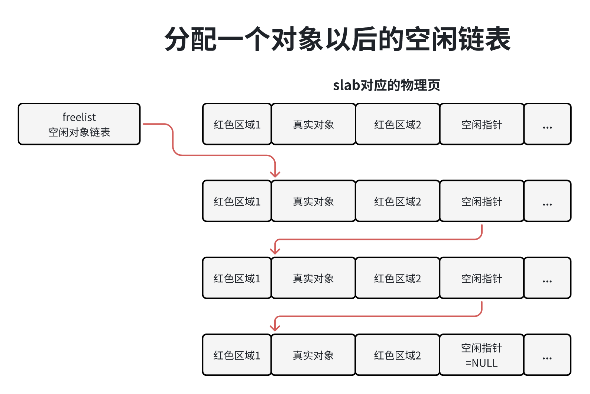
SLUB分配器在创建内存缓存的 时候计算了2种slab长度：最优slab和最小slab。最优slab时剩余部分比例最小的slab，最小slab只需要足够存放一个对象。当设备长时间运行后，内存碎化，分配连续物理页很难成功，如果分配最优slab失败，就分配最小的slab。
计算最优slab的长度时，有3个重要的控制参数。
1）slub_min_objects：slab的最小对象数量，默认值是0，可以在引导内核时使用内核参数”slub_min_bjects“设置。
2）slub_min_order：slab的最小阶数，默认值是0，可以在引导内核时使用内核参数”slub_min_order“设置。
3）slub_max_order：slab的最大阶数，默认值是页默认分配器认为昂贵的阶数3，可以在引导内核时使用内核参数，”slub_max_order“设置。
函数caculate_order负责计算最优slab的长度，其算法如下：
第1步：计算最小对象数量min_objects。
取控制参数slub_min_objects。
如果控制参数slub_min_objects是0，那么根据处理器梳理估算一个值，min_objects = 4 * (fls(nr_cpu_ids) + 1)，nr_cpu_ids是处理器数量，函数fls用来获取被设置的最高位，假设有16个处理器，fls(16)的结果是5。最小对象数量不能超过根据最大阶数slub_max_order计算出来的最大对象数量。
第2步：尝试把多个对象放在一个slab中。
x1while(最小对象数量min_obejcts > 1) {2slab剩余部分比例fraction取16，是倒数值。3while(剩余部分比例fractions >= 4){5调用函数slab_order(对象长度size, 最小数量min_obejcts, 最大阶数slub_max_order,6剩余部分比例fraction, 保留长度reserved)计算阶数。7如果算出的结束不超过最大阶数slub_max_order，那么返回这个阶数。9把剩余部分比例fatction / 2 在重试10}11把最小对象数量min_objects减1，然后重试。13}第3步：如果不能把多个对象放在䘝slab中，那么尝试把一个对象放在一个slab中，先尝试最大阶数取控制参数slub_max_order：最小对象数量取1，剩余部分比例取去，调用函数slab_order计算阶数，如果阶数不超过slub_max_order，那么返回这个数。
然后尝试最大阶数MAX_ORDER(页分配器支持的最大阶数时MAX_ORDER - 1)：最小对象数量取1，剩余部分鼻梁取1，大勇函数slab_order计算阶数，如果阶数小于MAX_ORDER，那么返回这个阶数。
函数slab_order负责计算阶数，输入参数是（对象长度size，最小对象数量min_objects，最大阶数max_order，剩余部分比例fraction，保留长度reserved）算法如下：
如果最小slab的对象数量已经超过每页最大对象数量（宏MAX_OBJS_PER_PAGE）(32767)，那么slab长度取（对象长度 * 每页最大对象数量）向上对线期到2n页的长度，然后取一半，slab阶数时（get_order(对象长度 * 每页最大对象数量) - 1），函数get_order用来获得内存长度的分配阶。
最小阶数min_order从slab最小阶数slub_min_order和根据最小对象数量min_objects算出slab阶数中取最大值。
51从最小阶数min_order的最大阶数max_order尝试{2slab长度 = 页长度左移阶数位3剩余长度 = （slab长度 - 保留长度） / 对象长度取余数4如果剩余部分比例不超过上限（1 / fraction），那么取这个阶数5}
SLAB分配器的每处理器缓存以对象为单位，而SLUB分配器的每处理器缓存以slab为单位。
如下图所示，内存缓存为每个处理器创建一个slab缓存。
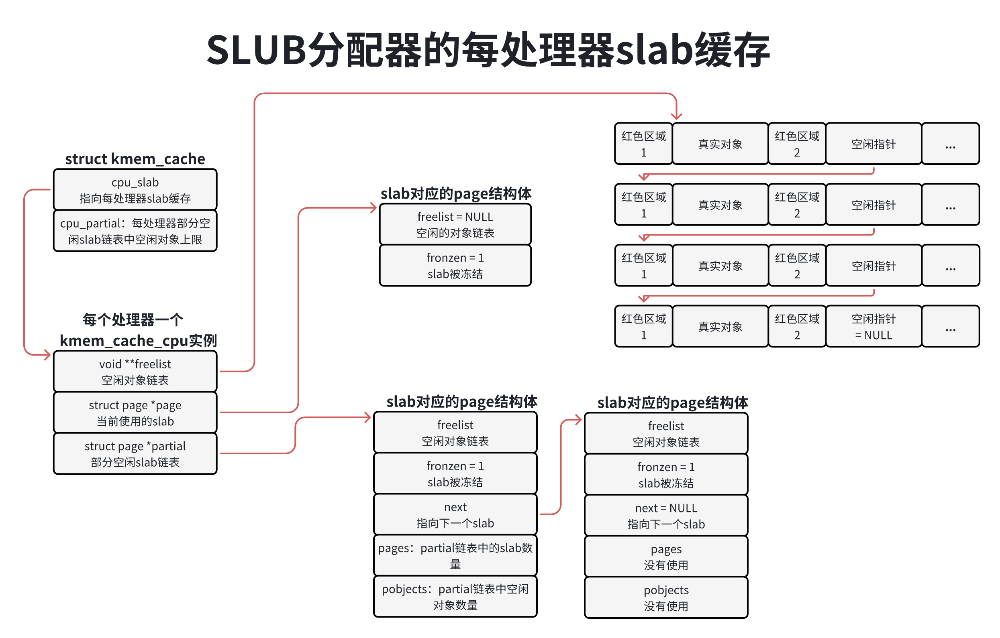
结构说明：
使用结构体kmem_cache_cpu描述slab缓存，成员page指向当前使用的slab对应的page实例，成员freelist指向空闲对象链表，成员partial指向部分空闲slab链表。
当前使用的slab对应的page实例：成员forzen的值为1，表示当前slab被冻结在每处理器slab缓存中，成员freelist被设置为空指针。
部分空闲slab链表：只有打开配置宏CONFIG_SLUB_CPU_PARTIAL，才会使用部分空闲slab链表（如果大考了调试配置宏CONFIG_SLUB_DEBUF，还要求没有设置slab调试标志位），目前默认打开了这个配置宏。为了和内存节点的空闲slab链表区分，我们把每处理器slab缓存中的空闲slab链表称为每处理器空闲slab链表。
链表中每个slab对应的page实例的成员frozen的值为1，表示slab被冻结在每处理器slab缓存中；成员next指向下一个slab对应的page实例。
链表中第一个slab对应的page实例的成员pages存放链表中slahb的数量，成员pobjects存放链表中空闲对象数量，后面的slab没有使用这2个成员。
kmem_cache实例的成员cpu_patial决定了链表中空闲对象的最大数量，是根据对象长度估算的值。
分配对象时，首先从当前处理器的slab缓存分配，如果当前有一个slab正在使用并且有空闲对象，那么分配一个对象；如果slab缓存中的部分空闲slab链表是不空的，那么取第一个slab作为当前使用的slab；其他情况下，需要慎重填充当前处理器的slab缓存。
1）如果内存节点的部分空闲slab链表，直到取第一个slab作为当前使用的slab，并且重填slab缓存中的部分空闲slab链表，直到取出所有slab的空闲对象总数超过限制kmem_cache.cpu_partial的一半为止。
2）否则，创建一个新的slab，作为当前使用的slab。
什么情况下会把slab存放到每处理器部分空闲slab链表中？
释放对象的时候看，如果对象所属的slab以前没有空闲对象，并且没有冻结在每处理器slab缓存中，那么把slab存放到当前处理器的部分空闲slab链表中。如果发现当前处理器的部分空闲slab归还到内存节点的部分空闲slab链表中。
这种做法的好处是：把空闲对象非常少的slab放在每处理器空闲slab链表中，优先从空闲对象非常少的slab分配对象，减少内存浪费。
1）内存缓存针对每个内存节点创建一个kmem_cache实例。
2）分配对象时，如果当前处理器的slab缓存时空的，需要重填当前处理器slab缓存。首先从本地内存节点部分空闲slab链表中取slab，如果本地内存节点的部分空闲slab链表是空的，那么从其他内存节点的部分空闲slab链表借用slab。
kmem_cache实例的成员remote_node_defrag_ratio称为远程节点反碎片比例，用来控制从远程节点借用部分空闲slab和从本地节点取部分空闲slab的比例，值越小，从本地节点取部分空闲slab的倾向越大。默认值1000，可以通过文件”/sys/kernel/slab/<内存缓存名称>/remote_node_defrag_ratio“设置某个内存缓存的远程节点反碎片比例，用户设置的范围是[0,100]，内存缓存保存的比例值是乘以10以后得值。
函数get_any_partial负责从其他内存节点借用部分空闲slab算法如下：
如果远程节点反碎片比例是0，或者当前处理器的时钟周期计数值除以1024的以大于远程节点反碎片比例，那么不允许从其他节点借用部分空闲的slab。
从当前进程的NUMA内存策略取内存节点。
从内存节点取备用区域列表。
遍历备用区域列表的每个目标区域{
如果(cpuset允许当前进程从目标内存节点分配内存，并且目标内存节点的部分空闲slab数量大于 最小部分空闲slab数量 kmem_cache.min_partial)
从目标内存节点借用部分空闲slab
返回
}
对于所有对象的slab，如果内存节点的部分空闲slab数量大于或等于最小部分空闲slab数量，那么直接释放，否则在部分空闲slab链表的尾部。
最小部分空闲slab数量kmem_cache.min_partial的计算方法是：
如果我们需要使用SLUB分配器的调试功能，首先需要打开调试配置宏CONFIG_DEBUG_SLUB，然后又2种选择：
1）打开配置宏CONFIG_SLUB_DEBUG_ON，为所有内存缓存打开所有调试选项。
2）在引导内核时使用内核参数”slub_debug“。
41// 为所有内存缓存打开调试选项2slub_debug = <调试选项> 3// 只有指定的内存缓存打开调试选项4slub_debug = <调试选型>,<内存缓存名称>调试选项如下所示：
1）F：在分配和释放时执行昂贵的一致性检查（对应标志SLAB_CONSISTENCY+CHECKS）
2）Z：红色区域（对应标志位SLAB_RED_ZONE）
3）P：毒化对象（对应标志位SLAB_POSION）
4）U：分配/释放用户跟踪（对应标志位SLAB_STORE_USER）
5）T：跟踪分配和释放（对应标志位SLAB_TRACE），只在一个内存缓存上使用
6）A：注入分配对象失败的错误（对应标志位SLAB_FAILSLAB，需要把打开配置宏CONFIG_FAILSLAB）
7）O：为可能导致更高的最小slab阶数的内存缓存关闭调试
8）-：关闭所有调试选项，在内核配置了CONFIG_SLUB_DEBUG_ON时有用处。
如果没有指定调试选型（即”sub_debug=“），表示打开所有调试选项。
SLOB分配器最大的特点就是简洁，代码只有600多行，特别适合小内存的嵌入式设备。
SLOB分配器内存缓存的数据结构如下图所示：
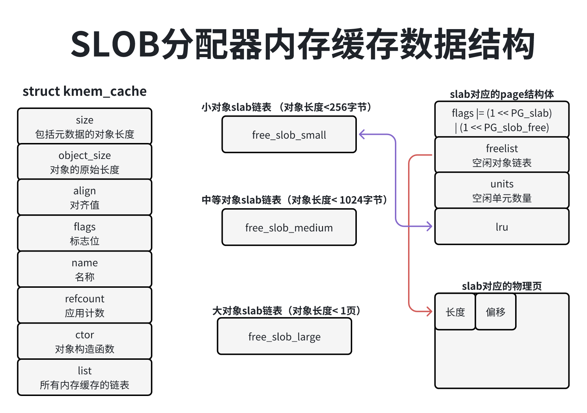
每个内存缓存对应一个kmem_cache实例；
成员object_size是对象原始长度，成员size是包括填充的对象长度，align是对齐值。
所有内存缓存共享slab，所有对象长度小于256字节的内存缓存共享小对象slab，所有对象长度小于1024字节的内存缓存对象共享中等对象slab链表中的slab，所有对象小于1页的内存缓存烘箱大对象中的slab链表中的slab。对象长度大于或等于1页的内存花奴采暖，直接从页分配器分配页不需要经过SLOB分配器。
每个slab的长度是一页，page结构体的行管成员如下：
成员flags设置标志位PG_slab，表示属于SLOB分配器；设置标志位PG_slob_free，表示slab在slab链表中。
成员freelist指向第一个空闲对象。
成员units表示空闲对象。
成员lru作为链表节点加入slab链表。
SLOB分配器的分配粒度时单元，也就是说，分配长度必须是单元的整数倍，单元是数据类型slobidx_t的长度，通常是2字节，数据类型slobidx_t的定义如下：
71// 位置：mm/slob.c2
3 typedef s16 slobidx_t 5 typedef s32 slobidx_t7来看下SLOB是怎么组织空闲对象，在SLOB分配器中，对象更准确的说法是（block），因为多个对象长度不同的内存缓存从同一个slab'分配对象，一个slab可能出现大小不同的快。
空闲的内存布局分为如下2种情况：
1）对于长度大于一个单元的块，第一个单元存放快长度，第二个单元存放下一个空闲块的偏移；
2）对于只有一个单元的快，该单元存放下一个空闲块的偏移的相反数，就是第一个负数；
长度和偏移都是单元数量，偏移是基准是页的起始地址。
已经分配出去的块：如果使用kmalloc()从通用内存分配的快，使用块前面的4字节存放申请的字节数，因为使用kfree()释放时需要知道块的长度，如果是从专用内存缓存分配的快，从kmem_cache结构体的成员size可以知道块的长度。
假设页长度是4KB，单元是2字节，一个slab的空闲对象链表的初始状态如下图所示：slab只有一个空闲块，第一个单元存放长度是2048，第二个单元存放下一个空闲块的偏移是2048，slab对应的page结构体的成员freelist指向第一个空闲块，成员units存放空闲单元数量2048。
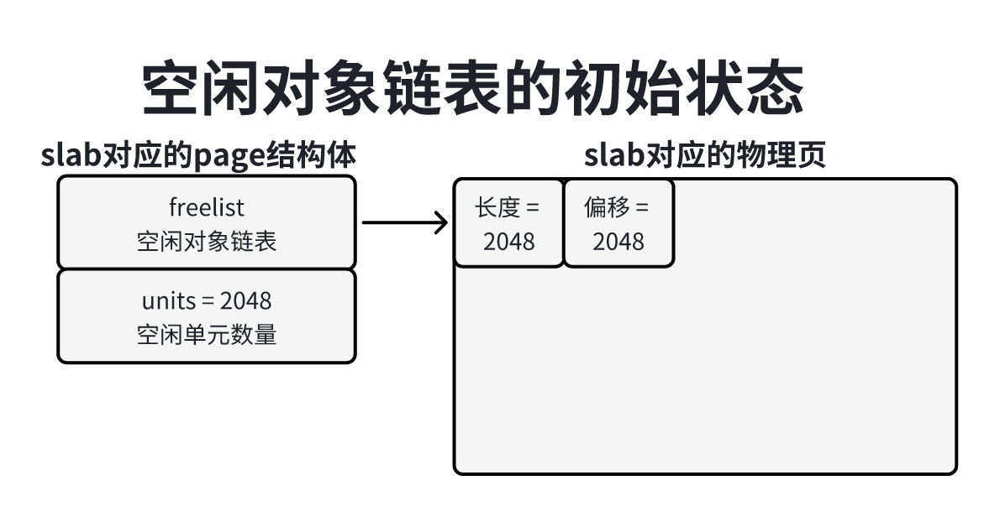
假设已给对象长度是32字节的内存缓存从这个slab分配了一个对象，空闲对象链表如下图所示，slab的前面32字节被分配，空闲块从第32字节开始，第一个单元存放长度2032，第二个单元存放下一个空闲块的偏移2048，slab对应的page结构体的成员freelist指向这个空闲块，成员units存放空闲单元数量2032。
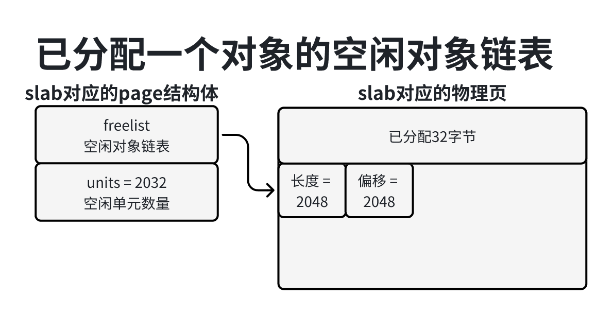
分配对象时，根据对象长度选择不同的策略。
1）如果对象长度小于256字节，那么从小对象slab链表中查找slab分配。
2）如果对象长度小于1024字节，那么从中对象slab链表中查找slab分配。
3）如果长度小于1页，那么从大对象slab链表中查找slab分配。
4）如果对象长度大于等于1页，那么从页分配分配器，不需要经过SLOB分配器。
对于前面3种请款个，遍历slab链表，对于空闲单元数量（page.units）大于或等于对象长度的slab，遍历空闲对象链表，当找到一个何时的空闲块时，处理方法是：如果空闲块的长度等于对象长度，那么把这个空闲块从空闲对象链表中删除；如果空闲块的长度大于对象长度，那么把这个空闲块分配成2部分，一部分分配出去，剩下部分放在空闲对象链表中。
如果分配对象以后，slab的空闲单元数量变成零，那么从slab链表中删除，并且清除标志位PG_slob_free。
为了减少平均查找时间，从某个slab分配对象以后，把slab链表的头部移到这个slab的前面，下一次分配对象的时候从这个slab开始查找。
如果变脸slab链表，没有找到合适的空闲块，就会创建新的slab。